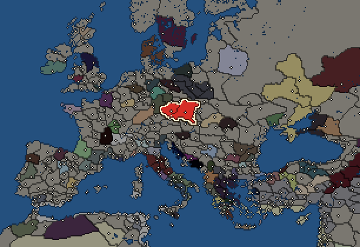

RTR: Imperium Surrectum
RTR: Imperium SurrectumBoii


- difficulty Very Difficult
- Gallic culture
- believes
 Celtic
Celtic - 2 settlements
- capital Eburodunum-Boihaemum
- 11,500 manpower
- 3 characters
- 20 faction units
- 430 regional units
The campaign brief
"The armies advance at speed, and a mighty noise spreads over the field when all the riders raise their horses' heads high with the bridle and then urge them forward; rearing aloft, the chargers then rush on and in their stormy flight over the plain leave hardly a trace of their hoof-prints on the dusty surface. A swift squadron of Boii, commanded by Crixus, takes the lead, dashing against the front rank of Romans, and blocking the way with their giant bodies. Crixus himself, proud of his ancestry, claimed descent from Brennus, and the taking of the Capitol was one of his titles to fame. He displayed on his shield the Gauls weighing the gold on the sacred eminence of the Tarpeian hill. A golden collar glittered on his snow-white neck; his garments were striped with gold, with gold his gauntlets were stiff, and his helmet-crest sparkled with the same metal." – Silius Italicus, Punica, IV
The skies are dark, and the omens foretell the return of the furrows of blood. Our people are threatened. Our allies, the Senones, are defeated and have been driven from their lands. Rome wants to expel all the Gauls from Italy and to colonise their lands. They think they are in a strong position, but they know nothing about our people! They know that we crossed the Alps a long time ago, but they do not know that our people still exist in our original homeland. In the midst of the Hercynian Forest that frightens them so much, our brethren have flourished. In Italy we are but a fertile branch that has crossed the highest peaks, the darkest valleys, the black forests of the north; overcoming many peoples and hunting monstrous beasts in the process, just to come here and prosper.
In the north, our brothers conquered the great forest and built a rich and powerful kingdom. Across the Albis [Elbe] and the Istrus [Danube], they linked the North with the East. Located in the middle of the Hercynian Forest, they are the obligatory crossing points for all merchants. Even the amber from the Baltic passes through their hands. By allying ourselves with the Insubrians, we even managed to send much coveted products from Italy across the Alps. This grand trading network bought us the friendship of many powerful nations, like the fierce Tauriscans from the eastern Alps.
Rome will have to understand that we will not be exterminated or driven out of these lands easily. Rome blames us for humiliating her in the past, but it was her citizens who murdered a messenger during a diplomatic meeting! Unlike these barbarians, we have never practised extermination in Italy. Our people settled among the Etruscans and Umbrians, as we still live among them today. That is why we have kept the friendship of the Etruscans and Umbrians despite past wars. The insolence of the Romans must stop. This time, the sword will not be thrown on a scale, but on their faces!
Our warriors will be joined by our brothers from the north who daily face the monstrous beasts, animal or human, that live near the Albis [Elbe]. Our cavalry will be reinforced by our experienced allies who defeated Illyrians and Greeks alike in the Balkans. Our war chariots will roll over the bones of the insolent, our javelins will pierce their flesh and our swords will cut off their heads! They will make fine trophies in our sanctuary!
Starting settlements
Boii begins with 2 settlements and 11,500 manpower.
| Settlement | Region | Size | Manpower | Already built | Settlement | Region | Size | Manpower | Already built |
|---|---|---|---|---|---|---|---|---|---|
| Eburodunum-Boihaemum (capital) | Boihaemum | large town | 7,000 | 9 buildings | Furgisatis | Boihaemum Occidentale | large town | 4,500 | 10 buildings |
What is already built in each settlement
Eburodunum-Boihaemum, in Boihaemum: Governor's Villa, Wooden Palisade, Homeland, Region Information Scroll, Roads, Local Barter, Land Clearance (Crops), Basic Armoury, Cisterns (Sanitation)
Furgisatis, in Boihaemum Occidentale: Governor's Villa, Wooden Palisade, Homeland, Region Information Scroll, Roads, Local Barter, Lumber Camp (Rural), Slash and Burn (Crops), Training Grounds, Cisterns (Sanitation)
Homeland
Boii's homeland is 3 regions. Only there can it install the Homeland government (more on homelands).

Starting diplomacy
Allied with (3):  Insubres ·
Insubres ·  Lugii ·
Lugii ·  Scordisci
Scordisci
Trade agreements with (3):  Insubres ·
Insubres ·  Lugii ·
Lugii ·  Scordisci
Scordisci
At peace with every other faction.
Like every faction, it is also at war with the  Free Peoples, who hold every settlement no faction does.
Free Peoples, who hold every settlement no faction does.
Starting characters
| Name | Role | Age | Name | Role | Age | Name | Role | Age | |||
|---|---|---|---|---|---|---|---|---|---|---|---|
| Britomaris | General | 50 | Vindex | General | 20 | Drustan | General | 46 |
Reforms
Open to every faction: Military innovations have arrived!, Second wave of military innovations have arrived!.
Units you can recruit
The same as in the main campaign.